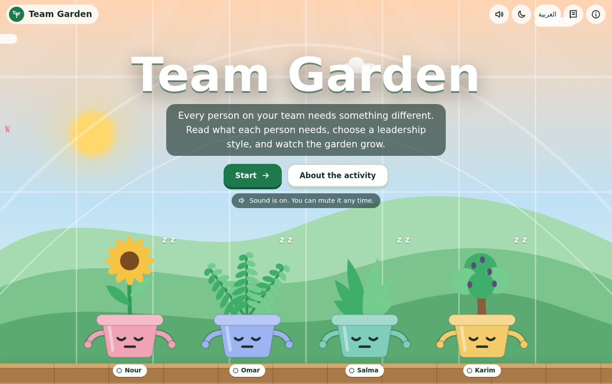
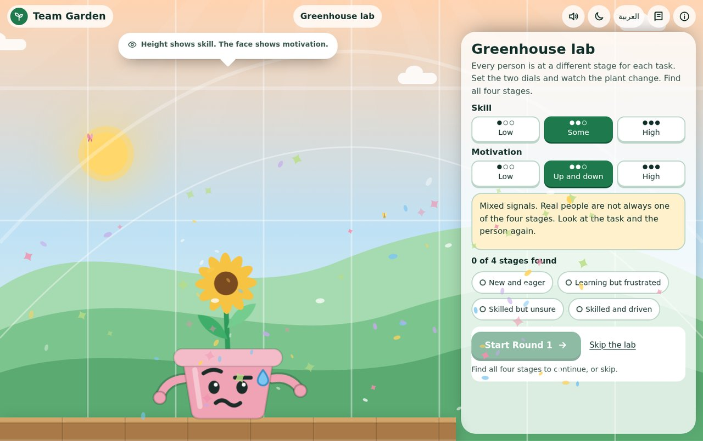

Team Garden
Match your style to what each person needs
An interactive simulation where new team leaders learn to match their leadership style to each person's skill and motivation — reading the signals, choosing a style, and watching the garden grow.
Overview
Team Garden is a browser-based simulation for Situational Leadership II. Each team member is a plant character. The learner reads the signals, picks one of four leadership styles, and sees the result right away — the plant blooms or wilts.
It works in English and Arabic, in light and dark mode, on desktop and mobile.
Learning Need & Audience
By the end, a learner can name the four development stages and the style that matches each, judge a person's stage from evidence rather than words, and change style when the task or the person's stage changes.

Instructional Design
Worked exploration first
A short Lab lets learners set two dials — skill and motivation — and watch the plant change, finding all four stages before any decision counts.
Scaffolded across three rounds
Round 1 shows the signals; Round 2 hides them behind a "poker face" so clues must be opened first; Round 3 brings the same people back with new tasks.
Stage belongs to the task
Round 3 teaches the key SLII idea — the same person can be at a different stage on a different task, two months later.
Feedback with reasons
A wrong style shows what would happen to that person, then the learner tries again. Only first-try answers count.

Play It
The simulation runs right here inside the portfolio, or scan to open it on your phone.
Tools & Honest Limits
Built with HTML, CSS, JavaScript, inline SVG, Web Audio (no audio files), and canvas particles. Accessible by intent: keyboard use, screen-reader labels, reduced-motion support, optional sound, and meaning that never depends on colour alone. Full Arabic (RTL) and English.
Honest limits. Scenarios are fictional and written for this activity. It hasn't been tested with real learners, and time estimates aren't measured. SLII terms should be checked against licensed material. Next: a pilot to measure whether learners read stage from evidence more accurately after playing.